Phone Inbox: mockups (2026-11-15, target #1170)
Spec: docs/superpowers/specs/2026-11-15-mobile-inbox-design.md. This is sub-project F of the Inbox builder (docs/superpowers/specs/2026-11-02-inbox-builder-design.md). Sample data only (acme, colleague A, example.com). Frames come in dark and light pairs where the layout differs. Colours follow PhoneTone. Orange is used only for waiting-for-you: Needs approval, rows that wait on the owner and the tab badge. Rows are flat with no separators, and cards are used only for waiting items and blocks. After the build, each frame is captured as a ScreenshotTourTests shot named inbox-… and compared against this file.
1. Inbox tab — the root (the menu and the root's own entries)
The tab sits second, after Now, so it is one tap from triage. The root has three parts:
- A pinned Needs approval card, shown only when something waits, with an orange count.
- The owner's folders as flat rows, each with an icon, its own count and a chevron.
- The root's entries in the Mac's order: Waiting for me first while a row waits, then by time.
An unread entry has a blue dot. A folder's count is the Mac's
InboxFolderCounts. The tab badge counts only what waits on the owner: open approvals and open Waiting for me rows. Pull to refresh does a fetch.
Root — dark
9:41●●●
⋯
Inbox
Acme Mac
✓Needs approval
Send a Slack message · Create a Jira issue · 1 more
3›
Inbox
Waiting for me
4 waiting · updated 6 min ago
4›
Morning brief · today
Plan: 2 of 6 done · 08:02
›
Track my threads
2 with news
›
Weekly mail roundup
ϟ run #12 · 2 h ago
›
◷Now
▤Inbox7
⚒Workbench
✉Chats
▦Calendar
Root — light
9:41●●●
⋯
Inbox
Acme Mac
✓Needs approval
Send a Slack message · Create a Jira issue · 1 more
3›
Inbox
Waiting for me
4 waiting · updated 6 min ago
4›
Morning brief · today
Plan: 2 of 6 done · 08:02
›
Track my threads
2 with news
›
Weekly mail roundup
ϟ run #12 · 2 h ago
›
◷Now
▤Inbox7
⚒Workbench
✉Chats
▦Calendar
Owner folder (pushed) — dark
9:41●●●
‹ Inbox
Release acme 2.0
In this folder
Release checklist
Updated 12 min ago · living
4 of 9 items green · 2 blockers
›
Changelog draft
ϟ run #4 · 09:20
Twelve merged changes since 1.9; three need a note from the owner…
›
◷Now
▤Inbox7
⚒Workbench
✉Chats
▦Calendar
2. Waiting for me — rows that carry a ref and their native actions
This is one living artifact that lists every ping. Each row shows the avatar or initials, who · where, two lines of text and an age badge, which turns
warning after 24 h, as on the Mac. Swiping left shows
Done and
Snooze; swiping right shows
Hide.
- A long press, or a tap and then ⋯, opens the full menu: Reply…, Done, Snooze ▸ (1 day / 3 days / 1 week), Hide, Open in Slack.
- Tapping a row opens its detail (frame 2c).
- While an action runs, the row is dimmed with a spinner.
- After it applies, the row leaves at once. The phone hides it locally until a publish leaves it out. If two publishes pass and the row is still there, the hub's state wins and the row shows again.
- If it fails, the row stays with the hub's error and Retry. A failed Done never hides a row.
List + one row swiped — dark
9:41●●●
‹ Inbox⋯
Waiting for me
4 waiting · updated 6 min ago
CAColleague A · #acme-release
Can you sign off the 2.0 checklist before 15:00? QA is done on our side.
26 h
CBColleague B · DM
Quick one: are we keeping the old…
Done
Snooze
JRACME-412 · Jira · mentioned you
@owner which build fixed the login loop?
3 h
✉partner@example.com · mail
Contract renewal — need your answer this week
1 h
◷Now
▤Inbox7
⚒Workbench
✉Chats
▦Calendar
Busy row + failed row with Retry — light
9:41●●●
‹ Inbox⋯
Waiting for me
4 waiting · updated 6 min ago
CAColleague A · #acme-release
Can you sign off the 2.0 checklist before 15:00?
Marking done…
CBColleague B · DM
Quick one: are we keeping the old login page after 2.0?
Couldn't snooze: the item was already closed on the Mac.
Retry
5 h
JRACME-412 · Jira · mentioned you
@owner which build fixed the login loop?
3 h
◷Now
▤Inbox7
⚒Workbench
✉Chats
▦Calendar
2c. Row detail — dark
9:41●●●
‹ Waiting for me⋯
CAColleague A
#acme-release · yesterday 07:40 · 26 h
Can you sign off the 2.0 checklist before 15:00? QA is done on our side, only the docs link is still red.
Why it matters
You own the release sign-off; the tag waits on it.
Thread
3 replies · QA green, docs link broken, colleague C fixing it.
Open in Slack ↗
Snooze ▾Reply…Done
2d. Reply… sheet — light
9:41●●●
‹ Waiting for me
CAColleague A
#acme-release · yesterday 07:40
Can you sign off the 2.0 checklist before 15:00?
CancelPropose
Reply in #acme-release
Signing off now — docs link is the only open item, fine to tag after colleague C's fix.
The reply goes to Needs approval. Nothing is sent until you approve it there, on this phone or on the Mac.
3. Needs approval
Superseded by spec §12 (board #2018, ask #1469): an approval in Needs approval is ChatUI's shared approval card (
AgentActionCard, ask #1409) in the phone's style, the same card the phone chat draws. These frames are the one source of truth for it; each also has a
-narrow image in
approval-card/.
- pending: Approve and Reject; without the
permissions grant "Approve on the Mac" and a live Reject;
- failed: Retry (without the grant "Retry on the Mac"); Dismiss only on a connector call whose outcome is unknown, the one row Go dismisses (per ask #1549, Q1) — today's Dismiss on an ordinary failed row is refused by Go;
- on its way, waiting to send, refused, not delivered, didn't confirm, done, dismissed: as in spec §12.5;
- Open Draft (save_automation) and Edit… stay on the Mac; an Inbox button's stuck task offers Try again;
- reminders keep their own card: Done and Snooze 1h.
Approve pins the SHA-256 of the arguments shown, as
actions approve --args-sha256 does; if they changed meanwhile the hub refuses and the card redraws.
inbox-approval-pending — light / dark
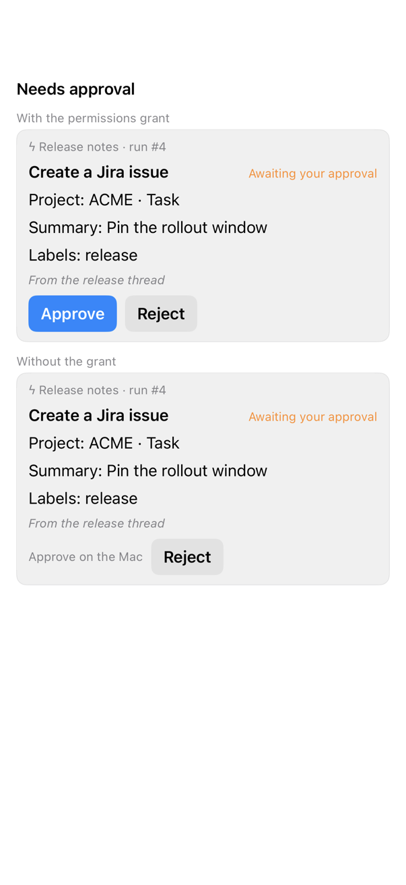
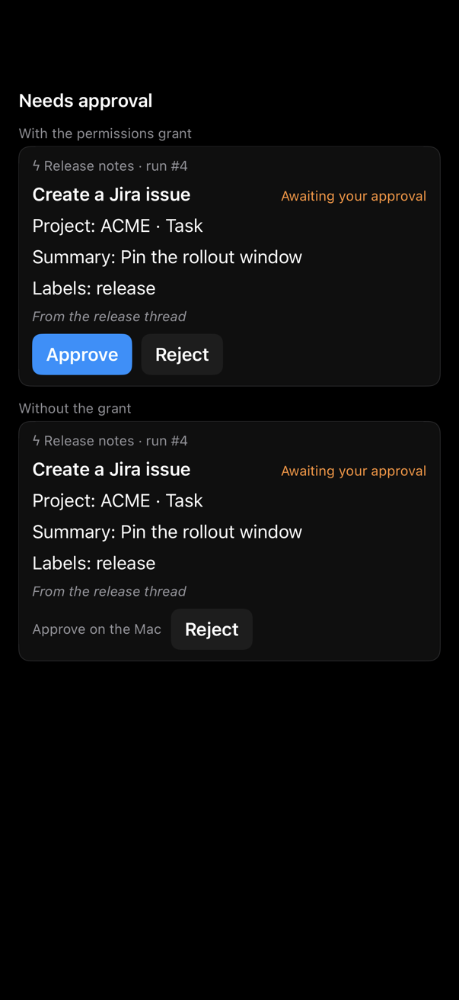
inbox-approval-failed — light / dark
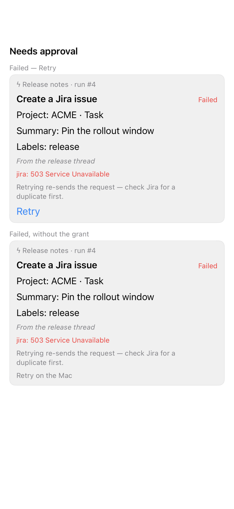
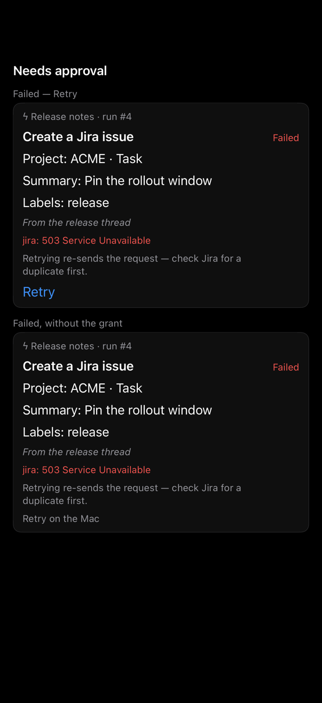
inbox-approval-sending — light / dark
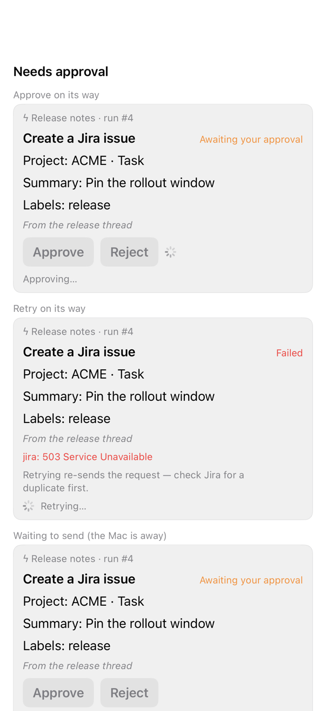
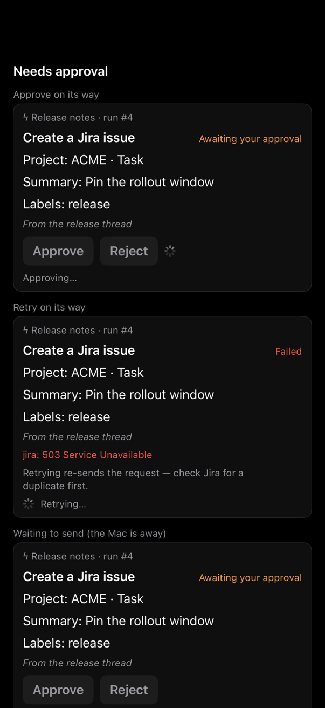
inbox-approval-refused — light / dark
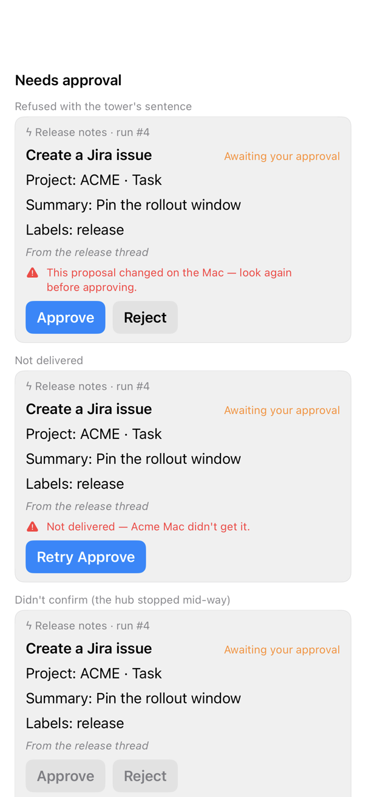
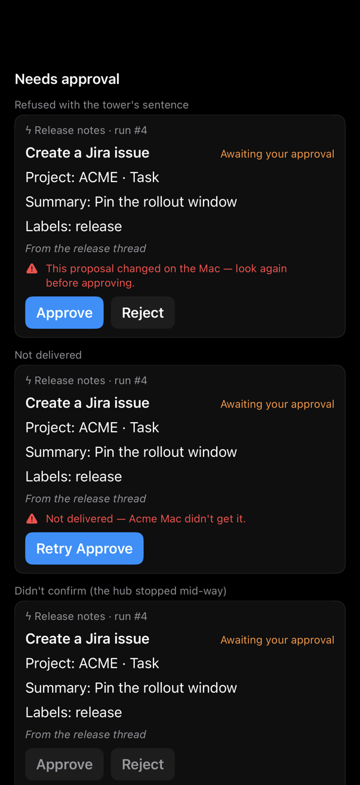
inbox-approval-settled — light / dark
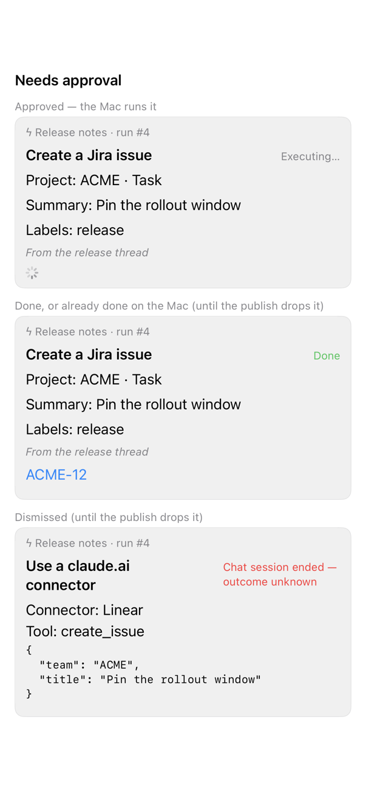
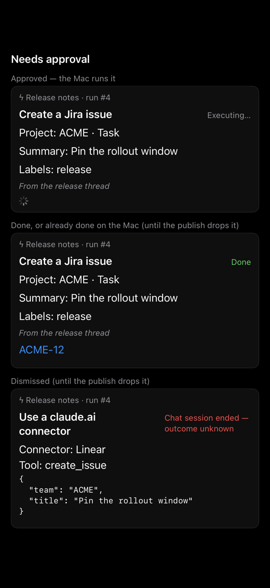
inbox-approval-dismiss — light / dark
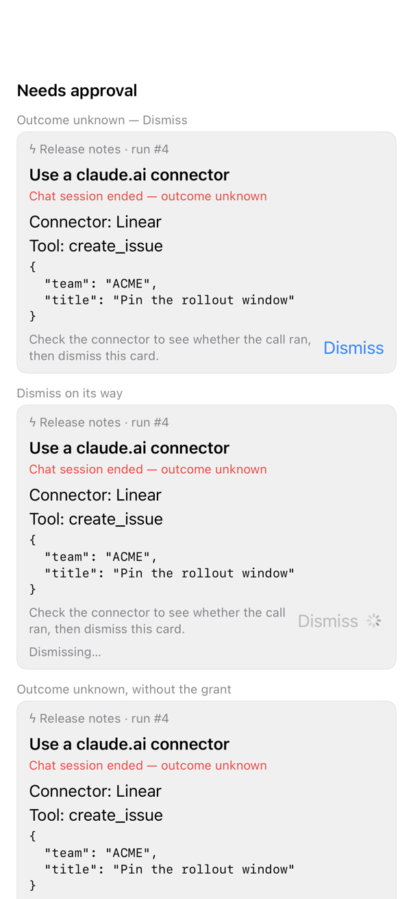
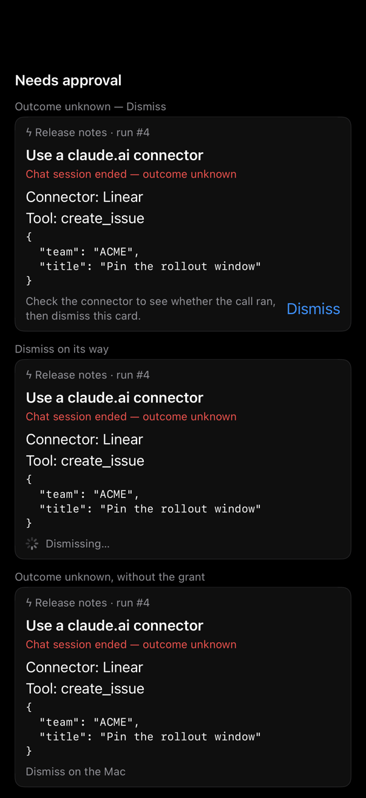
inbox-approval-mac-only — light / dark
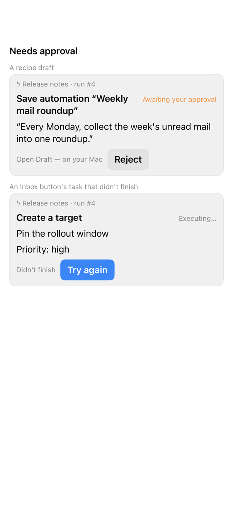
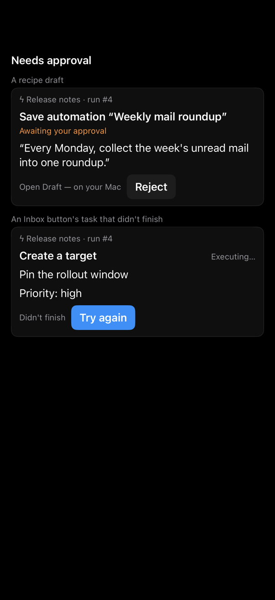
4. An artifact drawn from blocks
This is the same JSON the Mac draws (Kit
ArtifactDocument), rendered by a phone renderer built from phone parts. The header line is ϟ automation · run · time, or "Updated … ago" for a living card. Block by block:
heading and text (markdown) draw in place.metrics draw as a 2- or 3-up row.list rows use the tone pill. A row with a ref gets the native actions from section 2.table scrolls sideways inside its card.person draws as an avatar row.link opens Safari or the source's app.actions: reply and target work from the phone. open opens the URL. chat and agent are drawn disabled with "On your Mac".
The bottom bar has
Done and
Dismiss, which mark only the drawn version (
content_hash). Opening the card marks it read, also by hash.
Feed card — dark
9:41●●●
‹ Inbox⋯
ϟ Weekly mail roundup · run #12 · 2 h ago
Three threads need an answer
✉Contract renewal
partner@example.com · Tue
due Fri
✉Invoice 2026-11 question
billing@example.com · Mon
this week
✉Conference talk slot
events@example.com · Mon
FYI
Draft replies＋ TaskChat — on your Mac
DismissDone
Living card with a table — light
9:41●●●
‹ Release acme 2.0⋯
ϟ Release checklist · Updated 12 min ago
acme 2.0 — 4 of 9 green
| Item | Owner | State | Since |
|---|
| QA pass | Colleague C | green | Mon |
| Docs link | Colleague C | red | Tue |
| Changelog | You | draft | Wed |
scrolls ›
CCColleague C
QA lead · fixing the docs link
Release page ↗
DismissDone
Card ⋯ menu — dark
9:41●●●
‹ Inbox⋯
ϟ Weekly mail roundup · run #12 · 2 h ago
Three threads need an answer
DismissDone
Unsupported / unreadable card — light
9:41●●●
‹ Inbox⋯
ϟ Sprint board · Updated 3 min ago
This card needs a newer Watchtower on this iPhone. Showing its text.
Sprint 47: 18 of 24 done. Blocked: ACME-401 (waiting on design), ACME-415 (needs review)…
DismissDone
5. The root's legacy entries (until sub-project C) — ask #1348
Ask #1348 chose this. The hub turns the Mac's Morning brief, Track my threads and Idea finder into block documents with ref rows, so the phone needs no separate screen for them. Plan items get a new ref kind, plan_item, whose check writes day_plan_items.status. Tracks and ideas use the native actions of their ref kinds.
Morning brief — dark
9:41●●●
‹ Inbox
Your day · Wed 12 Nov · 08:02
Plan · 2 of 6
Sign off the 2.0 checklist
from Waiting for me
11:00
1:1 with colleague B
calendar
14:00
Attention
Release 2.0 tag waits on your sign-off; the docs link is the only red item.
◷Now
▤Inbox7
⚒Workbench
✉Chats
▦Calendar
Track my threads — light
9:41●●●
‹ Inbox⋯
Track my threads
Budget approval for Q1
Track · 10:12
Finance asked for the revised numbers by Friday.
2 new
Hiring: backend role
Track · yesterday
Second-round slot moved to Thursday.
1 new
Swipe: Done · Stop watching · long press: Make a Task
Stopped · 3Show
◷Now
▤Inbox7
⚒Workbench
✉Chats
▦Calendar
Idea finder — dark
9:41●●●
‹ Inbox
Idea finder
To judge · 1
Self-serve release notes page
Idea · proposed · from #acme-release
Teams keep asking where the notes live; one page per release would end the pings.
ApproveNot nowReject
Recent
💡Shared on-call calendar
Idea · active · Mon
⚖Keep the old login page until 2.1
Decision · Tue
◷Now
▤Inbox7
⚒Workbench
✉Chats
▦Calendar
6. States of the tab
The copy for each state lives in the model and is covered by a test.
- Loading: the first fetch after linking, before any Inbox record has arrived.
- Empty: the Inbox is fetched and nothing is in it.
- Empty folder: the narrow scope.
- Mac away: the cards stay as of the last publish, actions queue in the outbox, and the hub chip turns gray.
- Not delivered: an action the hub refused shows with Retry.
- Old Mac: the hub does not announce the
inbox capability.
- Organization policy:
MobileSync = workbench_only.
- Didn't confirm: the hub stopped in the middle of an action that must not run twice (approve, retry, Run Now, a reply). The phone never sends it again.
- Older cards: a folder past the 300-card cap ends with a line counting what stays on the Mac.
Loading — dark
9:41●●●
Inbox
Acme Mac
Getting your Inbox from Acme Mac…
◷Now
▤Inbox
⚒Workbench
✉Chats
▦Calendar
Empty — light
9:41●●●
⋯
Inbox
Acme Mac
✓
Nothing waits for you
New cards arrive after the next sync on Acme Mac.
◷Now
▤Inbox
⚒Workbench
✉Chats
▦Calendar
Empty folder (narrow scope) — dark
9:41●●●
‹ Inbox
Team
No cards in Team
Automations routed here write their cards into this folder. Routes are set on your Mac.
◷Now
▤Inbox7
⚒Workbench
✉Chats
▦Calendar
Mac away + queued and not delivered — light
9:41●●●
⋯
Inbox
Acme Mac · asleepas of 40 min ago
Waiting to send · 2Done on a ping · Approve on a Slack message. They apply when Acme Mac wakes.
Not delivered · 1Snooze on “Quick one: are we keeping…” — the Mac refused it: the item was already closed.
RetryDiscard
Waiting for me
3 waiting · updated 46 min ago
3›
◷Now
▤Inbox5
⚒Workbench
✉Chats
▦Calendar
Old Mac (no inbox capability) — dark
9:41●●●
Inbox
Acme Mac
Update Watchtower on Acme Mac
The Watchtower on Acme Mac is too old to send its Inbox to the phone.
◷Now
▤Inbox
⚒Workbench
✉Chats
▦Calendar
Organization policy — light
9:41●●●
Inbox
Acme Mac
The Inbox stays on your Mac
Your organization lets this phone see only Workbench.
◷Now
▤Inbox
⚒Workbench
✉Chats
▦Calendar
Didn't confirm — dark
9:41●●●
‹ Inbox
Reports
Run "Weekly report" now
acme · Report digest
Didn't confirm — check on the Mac.
Refresh
▤
Release notes for acme
Yesterday
◷Now
▤Inbox
⚒Workbench
✉Chats
▦Calendar
Older cards on the Mac — light
9:41●●●
‹ Inbox
Reports
▤
Weekly report for acme
Mon 9:02
42 older cards are on your Mac.
◷Now
▤Inbox
⚒Workbench
✉Chats
▦Calendar
7. Mac: the Inbox now comes from the tower (stage 1)
After stage 1 the Mac draws the feed that the tower returns over the daemon's socket (inbox.feed) and sends every write through inbox.act and the other tower commands. The Inbox looks the same as before. These states are new. First load shows a spinner and no sample rows. A failed load keeps the last list and shows the reason line with Retry; with no last list, the line shows alone. Reconnecting appears while the daemon restarts (an update, a new binary) and turns into a failure with Retry after 15 s. A failed action keeps its row with the reason and Retry, the same as on the phone.
First load — dark
Needs approval2
Inbox14
Work5
Reports3
Load failed, last list kept — light
Needs approval2
Inbox14
Work5
Reports3
Inbox
Couldn't refresh the Inbox: Watchtower's background service isn't running. Showing the list from 09:14.Retry
Weekly report for acme
Report digest · 9:02
Reply to colleague A about the release
Waiting for me · Slack
Action failed on a row — dark
Needs approval2
Inbox14
Work5
Reports3
Waiting for me
Reply to colleague A about the release
Couldn't mark it done: the database is busy. Retry
Review the acme budget
Waiting for me · Jira
Reconnecting — light
Needs approval2
Inbox14
Work5
Reports3
Inbox
Reconnecting to Watchtower…
Weekly report for acme
Report digest · 9:02
Reply to colleague A about the release
Waiting for me · Slack
Different version — dark
Inbox
Watchtower's background service is a different version.Restart
Weekly report for acme
Report digest · 9:02
8. Mac: tray Pause Sync, and actions on other screens (stage 0 and 1)
The tray gains Pause Sync, which becomes Resume Sync while paused. The status line then reads "Sync paused". Pausing stops sync only: the Inbox, the phone and every write keep working. Screens that now write through the tower, such as Ideas, Home, Digests, Tracks and Day plan, share one row treatment. A pressed row shows busy. A refusal shows the tower's sentence with Retry. A press that waits on a restart shows nothing for the first second. "Didn't confirm" means the outcome is not known, and the screen re-reads instead of sending again.
Tray menu, paused — dark
Sync paused
Open Watchtower
Sync Now
Resume Sync
Quit Watchtower
Tray menu, running — light
Synced 2 min ago
Open Watchtower
Sync Now
Pause Sync
Quit Watchtower
Ideas: busy, refused, didn't confirm — dark
Ideas
Share the release checklist with acme
Approving…
Move standup to 10:00
Couldn't approve it: this idea changed — look again. Retry
Draft a note to colleague A
Didn't confirm — checking again…